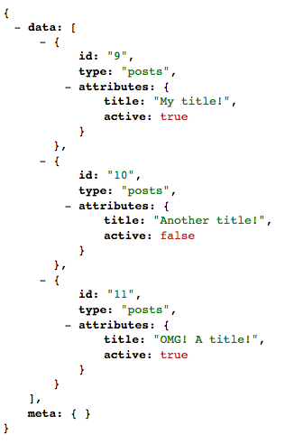
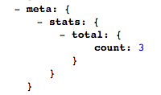
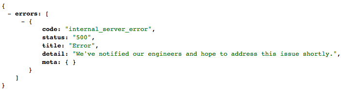

Quickstart
Zero to API in 5 minutes
This quickstart will use Rails with ActiveRecord. Head to the guides section for usage with alternate ORMs or avoiding Rails completely.
If the below seems too “magical”, don’t worry - we’re just applying some sensible defaults to get started quickly.
Installation
Let’s start with a classic Rails blog. We’ll use a template to handle some of the boilerplate. Just run this command and accept all the defaults for now:
$ rails new blog --api -m https://raw.githubusercontent.com/jsonapi-suite/rails_template/master/all.rbFeel free to run git diff if you’re interested in the
particulars; this is mostly just installing gems and including modules.
Note: if a network issue prevents you from pointing to this URL directly, you can download the file and and run this command as
-m /path/to/all.rb
Defining a Resource
A Resource defines how to query and persist your Model. In other
words: a Model is to the database as Resource is to the API. So
first, let’s define our model:
$ bundle exec rails generate model Post title:string active:boolean
$ bundle exec rake db:migrateNow we can use the built-in generator to define our Resource,
controller, and specs:
$ bundle exec rails g jsonapi:resource Post title:string active:booleanYou’ll see a number of files created. If you open each one, you’ll see comments explaining what’s going on. Head over to the tutorial for a more in-depth understanding. For now, let’s focus on two key concepts you’ll see over and over again: inputs (via strong_resources), and outputs (via jsonapi-rb).
Our API Inputs are defined in
config/initializers/strong_resources.rb. You can think of these as
strong parameter templates.
# config/initializers/strong_resources.rb
strong_resource :post do
attribute :title, :string
attribute :active, :boolean
endOur API Outputs are defined in
app/serializers/serializable_post.rb. The DSL is very similar to
active_model_serializers and full documentation can be found at jsonapi-rb.org:
# app/serializers/serializable_post.rb
class SerializablePost < JSONAPI::Serializable::Resource
type :posts
attribute :title
attribute :active
endNow run your app!:
$ bundle exec rails sVerify http://localhost:3000/api/v1/posts renders JSON correctly.
Now we just need data.
Seeding Data
We can seed data in two ways: the usual db/seeds.rb, or using an HTTP
client. Using the client helps get your feet wet with client-side
development, or you can avoid the detour and plow right ahead.
Seeding With Ruby
Edit db/seeds.rb to create a few Posts:
Post.create!(title: 'My title!', active: true)
Post.create!(title: 'Another title!', active: false)
Post.create!(title: 'OMG! A title!', active: true)And run the script:
$ bundle exec rake db:seedSeeding With JS Client
There are a variety of JSONAPI Clients out there. We’ll be using JSORM which is built to work with Suite-specific functionality like nested payloads. It can be used from the browser, but for now we’ll call it using a simple Node script.
Create the project:
$ mkdir node-seed && cd node-seed && touch index.js && npm initAccept the default for all prompts. Now add the JSORM dependency, as
well as a polyfill for fetch:
$ npm install --save jsorm isomorphic-fetchAdd this seed code to index.js:
require("isomorphic-fetch");
var jsorm = require("jsorm/dist/jsorm");
// setup code
var ApplicationRecord = jsorm.JSORMBase.extend({
static: {
baseUrl: "http://localhost:3000",
apiNamespace: "/api/v1"
}
});
var Post = ApplicationRecord.extend({
static: {
jsonapiType: "posts"
},
attrs: {
title: jsorm.attr(),
active: jsorm.attr()
}
});
// seed code
var post1 = new Post({
title: "My title!",
active: true
});
var post2 = new Post({
title: "Another title!",
active: false
});
var post3 = new Post({
title: "OMG! A title!",
active: true
});
// Save sequentially only due to local development env
post1.save().then(() => {
post2.save().then(() => {
post3.save();
});
});This should be pretty straightforward if you’re familiar with
ActiveRecord. We define Model objects, putting configuration on
class attributes. We instatiating instances of those Models, and call
save() to persist. For more information, see the JSORM Documentation.
Run the script:
$ node index.jsNow load http://localhost:3000/api/v1/posts. You should have 3 Posts in
your database!

Querying
Now that we’ve defined our Resource and seeded some data, let’s see
what query functionality we have. We’ve listed all Posts at
http://localhost:3000/api/v1/posts. Let’s see what we can do:
- Sort
- By title, ascending:
- URL:
/api/v1/posts?sort=title - SQL:
SELECT * FROM posts ORDER BY title ASC
- URL:
- By title, descending:
- URL:
/api/v1/posts?sort=-title - SQL:
SELECT * FROM posts ORDER BY title DESC
- URL:
- By title, ascending:
- Paginate:
- 2 Per page:
- URL:
/api/v1/posts?page[size]=2 - SQL:
SELECT * FROM posts LIMIT 2
- URL:
- 2 Per page, second page:
- URL:
/api/v1/posts?page[size]=2&page[number]=2 - SQL:
SELECT * FROM posts LIMIT 2 OFFSET 2
- URL:
- 2 Per page:
- Sparse Fieldsets:
- Only render
title, notactive:- URL:
/api/v1/posts?fields[posts]=title - SQL:
SELECT * from posts(optimizing this query is on the roadmap)
- URL:
- Only render
- Filter:
- Add one line of code:
# app/resources/post_resource.rb
allow_filter :title- URL:
/api/v1/posts?filter[title]=My title! - SQL:
SELECT * FROM posts WHERE title = "My title!" - Any filter not whitelisted will raise
JsonapiCompliable::BadFiltererror. - All filter logic can be customized:
# SELECT * from posts WHERE title LIKE 'My%'
allow_filter :title_prefix do |scope, value|
scope.where(["title LIKE ?", "#{value}%"])
end-
Customizations can be DRYed up and packaged into
Adapters. -
Extra Fields:
- Sometimes you want to request additional fields not part of a normal response (perhaps they are computationally expensive).
- This can be done like so:
# app/serializers/serializable_post.rb
extra_attribute :description do
@object.active? ? 'Active Post' : 'Inactive Post'
end- URL:
/api/v1/posts?extra_fields[posts]=description - SQL:
SELECT * FROM posts -
You can conditionally eager load data or further customize this logic. See the tutorial for more.
- Statistics:
- Useful for search grids - “Find me the first 10 active posts, and the total count of all posts”.
- One line of code to whitelist the stat:
# app/resources/post_resource.rb
allow_stat total: [:count]- URL:
/api/v1/posts?stats[total]=count - SQL:
SELECT count(*) from posts - Combine with filters and the count will adjust accordingly.
- There are a number of built-in stats, you can also add your own.
-
This is rendered in the
metasection of the response:
- Error Handling:
- Your app will always render a JSONAPI-compliable error response.
- Cause an error:
# app/controllers/posts_controller.rb
def index
raise 'foo'
end-
View the default payload:

-
Different errors can be customized with different response codes, JSON, and side-effects. View jsonapi_errorable for more.
Adding Relationships
JSONAPI Suite supports full querying of relationships (“fetch me this
Post and 3 active Comments sorted by creation date”), as well as
persistence (“save this Post and 3 Comments in a single request”).
Adding Relationships
Let’s start by defining our model:
$ bundle exec rails g model Comment post_id:integer body:text active:boolean
$ bundle exec rake db:migrate# app/models/post.rb
has_many :comments
# app/models/comment.rb
belongs_to :post, optional: true…and corresponding Resource object:
$ bundle exec rails g jsonapi:resource Comment body:text active:booleanConfigure the relationship in PostResource:
has_many :comments,
foreign_key: :post_id,
resource: CommentResource,
scope: -> { Comment.all }This code:
- Whitelists the relationship.
- Knows to link the objects via
post_id. - Will use
CommentResourcefor querying logic (so we can say things like “only return the latest 3 active comments”) - Uses an unfiltered base scope (
Comment.all). If we wanted, we could do things likeComment.activehere to ensure only active comments are ever returned.
You should now be able to hit /api/v1/comments with all the same
functionality as before. We just need to seed data.
Start by clearing out your database:
$ bundle exec rake db:migrate:resetAgain, you can seed your data using a NodeJS client or the traditional
db/seeds.rb.
Seeding with NodeJS
Let’s edit our node-seed/index.js. First add a Comment model:
var Comment = ApplicationRecord.extend({
static: {
jsonapiType: 'comments'
},
attrs: {
body: jsorm.attr(),
active: jsorm.attr(),
createdAt: jsorm.attr()
}
});…and add the relationship to Post:
// within attrs
// ... code ...
comments: jsorm.hasMany()
// ... code...Replace the existing Post instances with one Post and three
Comments:
var comment1 = new Comment({
body: "comment one",
active: true
});
var comment2 = new Comment({
body: "comment two",
active: false
});
var comment3 = new Comment({
body: "comment three",
active: true
});
var post = new Post({
title: "My title!",
active: true,
comments: [comment1, comment2, comment3]
});
post.save({ with: ["comments"] });Tell our controller it’s OK to sidepost comments:
# app/controllers/posts_controller.rb
strong_resource :post do
has_many :comments
endAnd tell our serializer it’s OK to render comments:
# app/serializers/serializable_post.rb
has_many :commentsNow run the script to persist the Post and its three Comments in a
single request:
$ node node-seed/index.jsSeeding With Ruby
Replace your db/seeds.rb with this code to persist one Post and
three Comments:
comment1 = Comment.new(body: 'comment one', active: true)
comment2 = Comment.new(body: 'comment two', active: false)
comment3 = Comment.new(body: 'comment three', active: true)
Post.create! \
title: 'My title!',
active: true,
comments: [comment1, comment2, comment3]Usage
Now let’s fetch a Post and filtered Comments in a single request: /api/v1/posts?include=comments.
Any logic in CommentResource is available to us. Let’s sort the
comments by created_at descending: /api/v1/posts?include=comments&sort=-comments.created_at. This should work out-of-the-box.
Now add a filter to CommentResource:
allow_filter :activeThat filter now works in two places:
/api/v1/comments?filter[active]=true/api/v1/posts?include=comments&filter[comments][active]=true
This is why Resource objects exist: they provide an interface to
functionality shared across many different endpoints, with no extra
code.
What’s Next
We have a full CRUD API with robust querying functionality, and the
ability to combine relationships for both reads and writes. But what
happens when you need to customize the sorting logic? What about replacing
ActiveRecord with an alternate persistence layer, or avoiding Rails
altogether?
These are important topics that JSONAPI Suite was built to address. To learn more about advanced usage and customization, we suggest following the tutorial. There are also a number of how-tos on this site, a good one to start with is How to Use without ActiveRecord
For additional documentation, view the YARD Docs.
For help with specific use cases, join our Slack chat!
Bonus: Testing
Installation
Our generator applied some sensible defaults:
- Rspec Test runner
- jsonapi_spec_helpers Helpers to parse and assert on JSONAPI payloads.
- factory_girl for seeding our test database with fake data.
- faker for generating fake values, such as e-mail addresses, names, avatar URLs, etc.
- database_cleaner to ensure our fake data gets cleaned up between test runs.
By default we rescue exceptions and return a valid error response. In tests, this can be confusing - we probably want to raise errors in tests. So note our exception handling is disabled by default:
# spec/rails_helper.rb
config.before :each do
JsonapiErrorable.disable!
endBut you can enable it on a per-test basis:
it "renders validation errors" do
JsonapiErrorable.enable!
post "/api/v1/employees", payload
expect(validation_errors[:name]).to eq("can't be blank")
endIn following this guide, we generated Post and
Comment resources. Let’s edit our factories to seed randomized data:
# spec/factories/post.rb
FactoryGirl.define do
factory :post do
title { Faker::Lorem.sentence }
active { [true, false].sample }
end
end
# spec/factories/comment.rb
FactoryGirl.define do
factory :comment do
body { Faker::Lorem.paragraph }
active { [true, false].sample }
end
endFinally, we need to define a Payload. Payloads use a
factory_girl-style DSL to define expected JSON. A Payload compares a
Model instance and JSON output, ensuring:
- No unexpected keys
- No missing keys
- No unexpected value types
- No
nullvalues (this is overrideable) - Model attribute matches JSON attribute
- This can all be customized. See jsonapi_spec_helpers for more.
Let’s define our payloads now:
# spec/payloads/post.rb
JsonapiSpecHelpers::Payload.register(:post) do
key(:title, String)
key(:active, [TrueClass, FalseClass])
end
# spec/payloads/comment.rb
JsonapiSpecHelpers::Payload.register(:comment) do
key(:body, String)
key(:active, [TrueClass, FalseClass])
key(:created_at, Time)
endRun
We can now run specs. Let’s start with the Post specs:
$ bundle exec rspec spec/api/v1/postsYou should see five specs, with one failing (spec/api/v1/posts/create_spec.rb),
and one pending (spec/api/v1/posts/update_spec.rb).
The reason for the failure is simple: our payload defined in
spec/payloads/post.rb specifies that a Post JSON should include the
key title. However, that spec is currently creating a Post with no
attributes…which means in the response JSON, title is null. null
values will fail assert_payload unless elsewise configured.
So, let’s update our spec to POST attributes, not just an empty object:
let(:payload) do
{
data: {
type: 'posts',
attributes: {
title: 'My title!',
active: true
}
}
}
endYour specs should now pass. The only pending spec is due to a similar
issue - we need to specify attributes in spec/api/v1/posts/update_spec.rb as
well. Follow the comments in that file to apply a similar change.
You should now have 5 passing request specs! These specs spin up a fake
server, then execute full-stack requests that hit the database and
return JSON. You’re asserting that JSON matches predefined payloads,
without nulls or unknown key/values.
Go ahead and make the same changes to Comment specs to get 10 passing
request specs.
It’s up to you how far you’d like to go with testing. Should you add a
new spec to spec/api/v1/posts/index_spec.rb every time you add a
filter with allow_filter? This boils down to personal preference and
tolerance of failures. Try adding a few specs following the generated
patterns to get a feel for what’s right for you.
Bonus: Documentation
We can autodocument our code using swagger documentation. Documenting an endpoint is one line of code:
jsonapi_resource '/v1/employees'Visit http://localhost:3000/api/docs to see the swagger documentation. Our custom UI will show all possible query parameters (including nested
relationships), as well as schemas for request/responses:

Our generator set up some boilerplate to enable this functionality, you can learn more at: How to Autodocument with Swagger